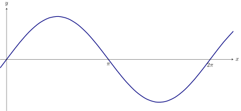
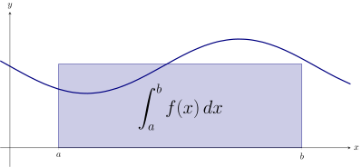
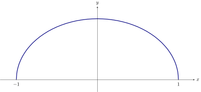
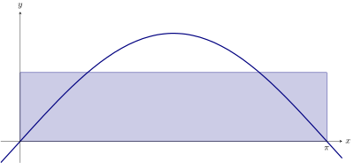

We give more contexts to understand integrals.
Velocity and displacement, speed and distance
Some values include “direction” that is relative to some fixed point.
- is the velocity of an object at time . This represents the “change in
position” at time .
- is the position of an object at time . This gives location with respect to
the origin. If we can assume that , then
- is the displacement, the distance between the starting and finishing
locations.
On the other hand speed and distance are values without “direction.”
- is the speed.
- is the distance traveled.
Consider a particle whose velocity at time is given by .

What is the displacement of the particle from to ? That is, compute: What is the
displacement of the particle from to ? That is, compute: What is the distance
traveled by the particle from to ? That is, compute: What is the distance traveled
by the particle from to ? That is, compute:
Average value
Conceptualizing definite integrals as “signed area” works great as long as
one can actually visualize the “area.” In some cases, a better metaphor for
integrals comes from the idea of average value. Looking back to your days as
an even younger mathematician, you may recall the idea of an average: If
we want to know the average value of a function, a naive approach might
be to partition the interval into equally spaced subintervals, and choose
any in . The average of , , …, is: Multiply this last expression by :
where . Ah! On the right we have a Riemann Sum! Now take the limit as : This leads
us to our next definition:
Let be continuous on . The
average value of on is given by
The average value of a function gives the height of a single rectangle whose area is
equal to

An application of this definition is given in the next example.
An object moves back and forth along a straight line with a velocity given by on ,
where is measured in seconds and is measured in ft/s.
What is the average velocity of the object?
By our definition, the average velocity is:
When we take the average of a finite set of values, it does not matter how we order
those values. When we are taking the average value of a function, however, we need
to be more careful.
For instance, there are at least two different ways to make sense of a vague phrase
like “The average height of a point on the unit semi circle”

One way we can make sense of “The average height of a point on the unit
semi circle” is to compute the average value of the function on the interval
.
Compute the average value of the function on the interval .
By definition, we wish to
compute Computing this integral geometrically, we find the average value to be
.
Compute the average value of the function on the
interval .
By definition, we wish to compute Computing this integral geometrically,
we find the average value to be .
See if you can understand intuitively why the average using should be larger than
the average using .
Mean value theorem for integrals
Just as we have a Mean Value Theorem for Derivatives, we also have a Mean Value
Theorem for Integrals.
The Mean Value Theorem for integrals Let be continuous on . There exists a value
in such that
This is an existential statement. The Mean Value Theorem for Integrals tells
us:
The average value of a continuous function is in the range
of the function.
We demonstrate the principles involved in this version of the Mean Value Theorem in
the following example.
Consider . Find a value guaranteed by the Mean Value Theorem.
We first need to
evaluate . Thus we seek a value in such that .
A graph of is sketched along with a rectangle with height are pictured below. The
area of the rectangle is the same as the area under on .
